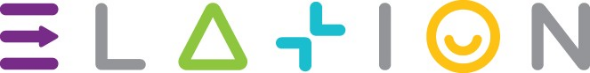

The Elation Mindset Profiling Tool
üîç
üí°Your Profile
As a Seeker, you are a persistent and determined individual, driven by a desire to achieve success even in the face of perceived constraints. Your fixed mindset focuses on leveraging existing strengths and proven strategies, while your victim mindset may sometimes make you feel limited by external circumstances. Your scarcity mindset helps you be resource-conscious, and your promotion focus drives you to pursue ambitious goals despite challenges. Together, these traits make you a resilie...
⭐Core Traits
- Determined: You remain focused on achieving your goals, even when facing setbacks.
- Resourceful: Your scarcity mindset helps you find creative ways to make the most of limited resources.
- Ambitious: Your promotion focus keeps you striving toward success and high-impact outcomes.
- Practical: You rely on established methods and proven strategies to guide your efforts.
üí™Your Strengths
- Persistence: You stay committed to your goals, even when progress feels slow.
- Optimizing Resources: Your scarcity mindset helps you make the best use of available tools and opportunities.
- Ambition: Your promotion focus keeps you motivated to reach for meaningful achievements.
- Focus on Strengths: Your fixed mindset allows you to refine and master skills for consistent results.
⚠️Your Challenges
- Accountability: Your victim mindset may lead you to attribute setbacks to external factors, limiting your sense of control.
- Adaptability: Your fixed mindset might make it harder to embrace new approaches or expand beyond your comfort zone.
- Limited Vision: Your scarcity mindset may prevent you from recognizing expansive possibilities.
üå±Opportunities for Growth
- Adopt a Growth Mindset:
- Reflect on areas where learning new skills or trying new approaches could enhance your effectiveness.
- Celebrate progress and experimentation, even when they lead to learning experiences rather than immediate success.
- Shift Toward Accountability:
- Focus on what you can control in any situation and take ownership of your role in outcomes.
- Use setbacks as opportunities for growth and personal development.
- Embrace an Abundance Mindset:
- Practice gratitude by acknowledging the resources and opportunities you already have.
- Look for collaborative opportunities to expand your possibilities and broaden your perspective.
üöÄSeeker in Action
- At Work: You excel in roles that require determination and resourcefulness. Your ability to focus on strengths and optimize resources makes you a valuable contributor in constrained or challenging environments.
- In Relationships: Your practical and driven nature fosters trust and admiration. Practicing accountability and openness can help you build stronger, more supportive connections.
- For Personal Growth: Your ambition and resilience drive steady progress. Embracing adaptability and accountability will help you unlock greater potential and personal fulfillment.
üéØYour Next Steps
- Focus on What You Can Control: Reflect on your role in challenges and identify actions you can take to influence outcomes.
- Experiment with Flexibility: Try new approaches in low-risk areas to build confidence in adaptability.
- Celebrate Progress: Recognize and celebrate small wins to maintain motivation and build momentum.
üåüConclusion
Seekers like you are determined achievers who navigate challenges with persistence and resourcefulness. Your ability to optimize resources and strive for success ensures meaningful contributions in any environment. By embracing accountability and adaptability, you can expand your influence and unlock even greater opportunities.
Keep striving to uncover potential, Seeker‚Äîyou‚Äôre destined for great things! üåü